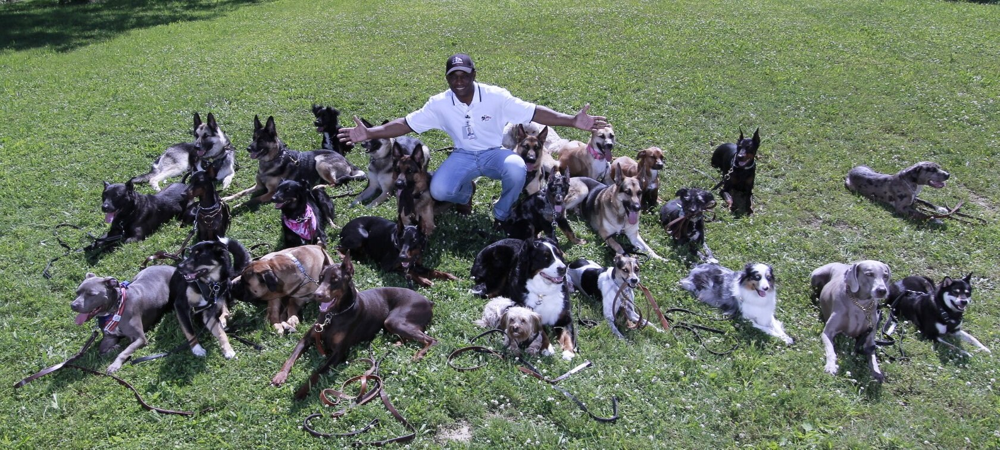

Lorenzo Miller
Cleveland, OH
Founder Lorenzo Miller built LDTT from childhood passion, professional study, and a mission of Serious Training. Serious Results.

Cleveland, OH
Founder Lorenzo Miller built LDTT from childhood passion, professional study, and a mission of Serious Training. Serious Results.
Lorenzo Miller Lorenzo’s love of dogs began at an early age. Growing up in the inner city at 6 years old, his heart went out to all the stray dogs in the neighborhood. He would see them knocking over garbage cans looking for food.
He began to bring the dogs home but was not allowed to keep them. He smuggled them into his bedroom and trained them, knowing they had to be quiet in order to keep them hidden. Once his parents realized this was more than a phase, at age 10 they sent him off to train with various professional dog trainers.
Lorenzo paid his way through college by providing in-home dog training. The Lorenzo’s training technique was developed after working with numerous dog trainers in the late 70’s and 80’s by studying different methods in various fields of training. Becoming frustrated with their weaknesses, Lorenzo took the best that each technique had to offer and developed his own style of training.
Since its incorporation in 1987, Lorenzo’s Dog Training Team is responsible for the training of thousands of dogs and trainers in the Cleveland area. He is now placing trainers all over the world by recruiting, boarding, training, and hiring qualifying candidates to spread the Lorenzo’s technique and philosophy into the homes and businesses of dog owners around the world. Lorenzo’s motto has always been “Serious Training, Serious Results” with the main goal of keeping dogs in happy homes and out of shelters.
Send your request directly to Lorenzo's office with Lorenzo Miller already assigned as the source trainer.